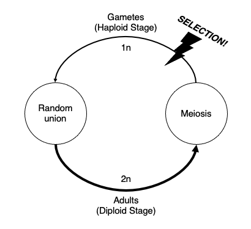
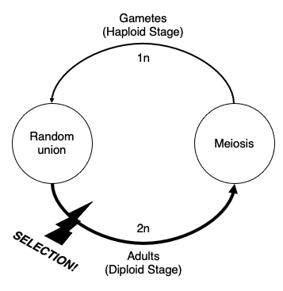

Lecture 4: One-locus selection
Lecture overview
- Review of Hardy-Weinberg
- One-locus haploid selection in discrete time
- One-locus diploid selection in discrete time
- One-locus haploid selection in continuous time
- Comparing the haploid selection models in discrete and continuous time
- The models we've covered
1. Review of Hardy-Weinberg
After one generation of random mating in a single large population with no selection and no mutation, diploid genotype frequencies at a locus with two alleles become:
\(Freq(AA) = x = p^2\)
\(Freq(Aa) = y = 2pq\)
\(Freq(aa) = z = q^2\)
\(\rightarrow\) Hardy-Weinberg equilibrium.
Furthermore, \(p' = p\).
\(\rightarrow\) Allele frequencies do not change over time.
Question: What if the genotypes vary in fitness?
2. One-locus haploid selection in discrete time
We begin by examining selection in a model with haploid selection.
Life-cycle diagram

We will census at the beginning of the haploid phase (immediately after meiosis).
Derivation
Let there be two haploid genotypes (\(A\) and \(a\)) with
-
\(N_A =\) number of \(A\) individuals
-
\(N_a =\) number of \(a\) individuals
We assume that these numbers are very large.
Now, let’s assume that not all haploid individuals survive to reproduce:
-
\(v_A =\) probability of survival (or viability) of an \(A\) individual
-
\(v_a =\) probability of survival (or viability) of an \(a\) individual
After these deaths have occurred (but before gametes unite):
Because gametes unite at random and undergo meiosis to produce the next generation of haploids, and neither of these processes change allele frequencies, the frequency of A at the next census is:
We initially showed that the frequency of A in the current generation is
And we just showed that the frequency of A in the next generation is
but... this isn’t quite a recursion equation. Why? (Hint: what's the difference between \(p\) and \(N\)?)
This is a recursion equation giving the allele frequency over time in our model of viability selection during the haploid phase.
The denominator in this equation is the mean absolute fitness of the population, \(\bar v(t)\), which will determine the dynamics of the total population size
Simplifying our equation of one-locus haploid selection
Our current recursion is a function of two parameters, the absolute viabilities, \(v_A\) and \(v_a\)
Now notice that if we divide both the numerator and denominator by one of these viabilities, say \(v_a\)
We can reduce the recursion to a function of only one parameter, \(V_A = v_A/v_a\), the relative viability of \(A\)
The denominator in this equation is the mean relative fitness of the population. This simpler equation shows that the dynamics of the total number of individuals does not influence evolution in this model. All we need to predict evolution are the relative fitnesses.
3. One-locus diploid selection in discrete time
Since we are all currently in the diploid phase of our life-cycle, it is natural to ask:
Does selection in the diploid phase work the same way?
Life-cycle diagram

We will census at the beginning of the diploid phase (immediately after gamete union).
Derivation
Let there be three genotypes \(AA\), \(Aa\), and \(aa\) with
- \(N_{AA}(t) =\) number of \(AA\) individuals
- \(N_{Aa}(t) =\) number of \(Aa\) individuals
- \(N_{aa}(t) =\) number of \(aa\) individuals
and we assume these to be very large.
What is the frequency of \(A\), \(p(t)\), at this point?
Now let's assume that not all diploid individuals survive to reproduce:
- \(V_{AA} =\) probability of survival (or viability) of an \(AA\) individual
- \(V_{Aa} =\) probability of survival (or viability) of an \(Aa\) individual
- \(V_{aa} =\) probability of survival (or viability) of an \(aa\) individual
After these deaths (and before meiosis):
And since meiosis and gamete union will not change this frequency, the frequency of the A allele in the next generation is
With random union of gametes in a gamete pool or random mating of individuals, the diploid offspring are in Hardy-Weinberg proportions: \(p^2(t)\) ∶ \(2p(t)q(t)\) ∶ \(q^2(t)\), where \(p(t)\) is the frequency of the A allele among the mating individuals at time t.
Specifically,
- \(N_{AA}(t) = p^2(t)N(t)\)
- \(N_{Aa}(t) = 2p(t)q(t)N(t)\)
- \(N_{aa}(t) = q^2(t)N(t)\)
where \(N(t) \equiv N_{AA}(t) + N_{Aa}(t) + N_{aa}(t)\) is the total population size.
Substituting these in we can rewrite the above equation as
This is a recursion equation giving the allele frequency over time in the model with viability selection during the diploid phase.
Simplifying our equation of one-locus diploid selection
As in the haploid selection case, we can rewrite our recursion with absolute viabilities in terms of relative viabilities by dividing the numerator and denominator by some constant, say \(v_{aa}\),
which is a function of only two parameters, WAA = vAA/vaa and WAa = vAa/vaa, and shows that evolution once again does not depend on the dynamics of total population size (just relative fitnesses).
Comparing the one-locus haploid and diploid discrete-time models
So, returning to our original question, how does evolution under diploid selection
compare to evolution under haploid selection
To compare these models, let’s assume the viability of a diploid genotype is the product of the haploid viabilities, ie, \(v_{AA} = v_Av_A\), \(v_{Aa} = v_Av_a\), and \(v_{aa} = v_av_a\).
Then our diploid recursion reduces to
Thus we need twice as much selection (eg, \(v_{AA} = v_Av_A\)) under diploid selection for evolution to proceed as quickly as under haploid selection. Why is that?
4. One-locus haploid selection in continuous time
We have assumed, so far, that generations are discrete. For populations with overlapping generations, a similar model may be constructed in continuous time.
We now define fitness according to the growth rate of each genotype:
- \(r_A =\) growth rate of each \(A\) individual
- \(r_a =\) growth rate of each \(a\) individual
These definitions tell us that:
- \(\frac{dN_A}{dt} = r_AN_A\)
- \(\frac{dN_a}{dt} = r_aN_a\)
At any particular point in time, \(p = N_A/(N_A + N_a)\). How can we derive \(dp/dt\) given that we know how the number of each type changes over time?
Mathematical aside: the chain rule
A function of one variable, \(f(x(t))\), obeys the one-variable chain rule:
A function of two variables, \(f(x(t), y(t))\), obeys the two-variable chain rule:
Now, because \(p\) is a function of both \(N_A\) and \(N_a\), we can use the two-variable chain rule to determine that
where \((r_A - r_a)\) is the selective advantage of allele \(A\) in terms of its growth rate.
A similar equation can be derived for the diploid-selection model in continuous time, but we will not study this equation in class.
5. Comparing the haploid selection models in discrete and continuous time
Are the haploid-selection models in discrete and continuous time as different as they look?
Not really. Discrete and continuous time models generally behave in a similar fashion when changes occur slowly over time. For this model of selection, this implies that they will be similar when the fitnesses are nearly equal, ie, \(v_A − v_a\) is small.
This is fairly easy to prove with the definition of a derivative
!!! note "Mathematical aside: definition of the derivative $$ \frac{df}{dt} = \lim_{\Delta t \rightarrow 0}\frac{f(t + \Delta t) - f(t)}{\Delta t} = \lim_{\Delta t \rightarrow 0}\frac{\Delta f}{\Delta t} $$
When selection is weak, the change in allele frequency in the discrete model may be described approximately by the differential equation:
where \(s = vA − va\). This is the same equation governing the change in allele frequency over time in the continuous time model, if we define \(s = rA − ra\).
6. The models we've covered
| Model | Discrete time | Continous time |
|---|---|---|
| Exponential growth | \(N(t+1) = (1+r)N(t)\) | \(\frac{dN(t)}{dt} = rN(t)\) |
| Logistic growth | \(N(t+1) = (1 + r(1 - \frac{N(t)}{K}))N(t)\) | \(\frac{dN}{dt} = r(1 - \frac{N(t)}{K})N(t)\) |
| Haploid selection | \(p(t+1) = \frac{p(t)W_A}{p(t)W_A + q(t)W_a}\) | \(\frac{dp}{dt} = (r_A - r_a)p(1-p)\) |
| Diploid selection | \(p(t+1) = \frac{p(t)^2W_{AA} + p(t)q(t)W_{Aa}}{p(t)^2W_{AA} + p(t)q(t)W_{Aa} + q(t)^2W_{aa}}\) | Not derived |
See textbook sections 3.4 and 3.5 for models of interacting species and epidemiology.